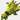
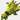
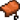
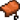
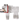

Lors de son aventure, le joueur rencontrera des créature, passve ou hostile mais aussi des créature neutre. Les créatures passie apparaissent la journée tantis que les créature hostile apparaissent la nuit.
Les créature passive: ce sont des créature qui n'attaque pas le joeurs ce sont généralement des animaux leurs seul but est de donner au joueur des ressources pour survivre ou avancer dans son aventure. On peut retrouver les vaches, les moutons, les cochons et bien plus encores ! .
Les créature neutre: ce sont des créatures qui sont normalement passive contrairement au créature passive, ces créatures peuvent attaquer le joueur lors qu'il subit des dégats de la part de celui-ci. On peut retrouver les loups et bien plus encores !
Créature passive
La vache : c'est
une
créature passive qui sera très utile. Cette
créature
donne tous un tas de ressources utile pour la survie et l'amélioration de l'équipement du joueur. Pour la survie, la vache donne du beef pour éviter au joueur de
mourrir de faim, avec un sceau vide et un clique
droit sur la vache pour avoir un sceau de lait
pour éviter au joueur de
mourrir de faim, avec un sceau vide et un clique
droit sur la vache pour avoir un sceau de lait qui
permet apres avoir consommer de retirer tous les effets de potions négatif/positif. Elle donne aussi du cuir
pour créer des armures en cuir. Avec cette créature on peut faire de
l'élevage pour obtenir une nouvelle vache il faudra 2 vaches
arrivé a maturation puis faire un clique droit
sur les deux vaches avec du blé pour obtenir un veau.
qui
permet apres avoir consommer de retirer tous les effets de potions négatif/positif. Elle donne aussi du cuir
pour créer des armures en cuir. Avec cette créature on peut faire de
l'élevage pour obtenir une nouvelle vache il faudra 2 vaches
arrivé a maturation puis faire un clique droit
sur les deux vaches avec du blé pour obtenir un veau.
Le mouton: est une créature passive qui est utile au joueur etant donné qu'il produit de la laine (notament pour faire un lit) qui peut être obtenue avec des ciseaux ou alors quand on tue le mouton. il donne aussi de la viande. Comme la vache, le mouton peut être éléver pour avoir plus de mouton donc par la même occasion plus de ressource
Le cochon: c'est une créature
passive qui nourris le joueur, il donne
uniquement de la côtelette . elle peut être éléver avec pour avoir plus de
cochons il suffi de deux cochons et de leur donné une carotte chacun pour obtenir
un porcinet. si le joueur
possède une canne a pêche avec une carotte au bout
. elle peut être éléver avec pour avoir plus de
cochons il suffi de deux cochons et de leur donné une carotte chacun pour obtenir
un porcinet. si le joueur
possède une canne a pêche avec une carotte au bout et que le cochon est
équiper d'une selle, le cochon peut
servir de monture.
et que le cochon est
équiper d'une selle, le cochon peut
servir de monture.
Créature neutre
Le loup: cette créature neutre peut être
apprivoiser pour devenir un chien il suffi
d'avoir des os dans sa main et de faire un clique droit dessur on différencie d'un chien a un loup avec un
colier de couleur rouge (non modifier). Le n'attaque pas le
joueur sauf si celui-ci lui a infliger des dégats alors tous les loups de la zone deviennent agressif et
attaque le joueur. Apres être apprivoiser, le loup peut être
reproduit il suffi d'avoir 2 loups apprivoiser
(chien) et d'avoir deux morceaux de viande (beef) et de
faire un clique droit.